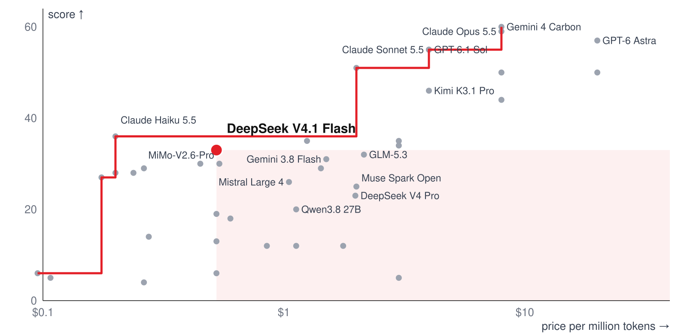
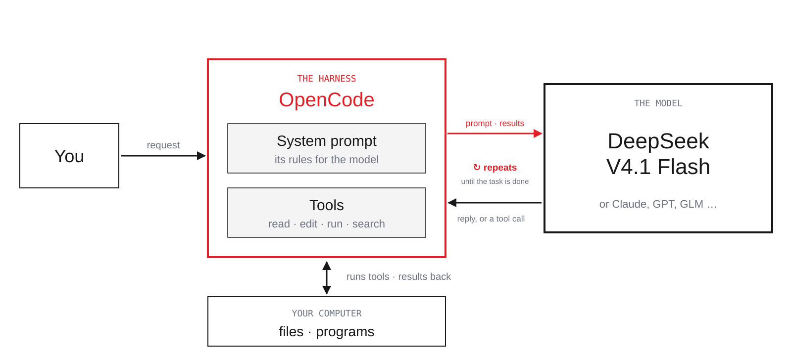
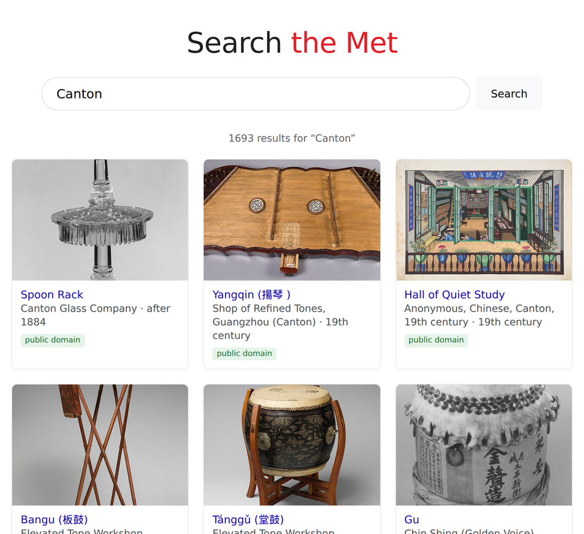
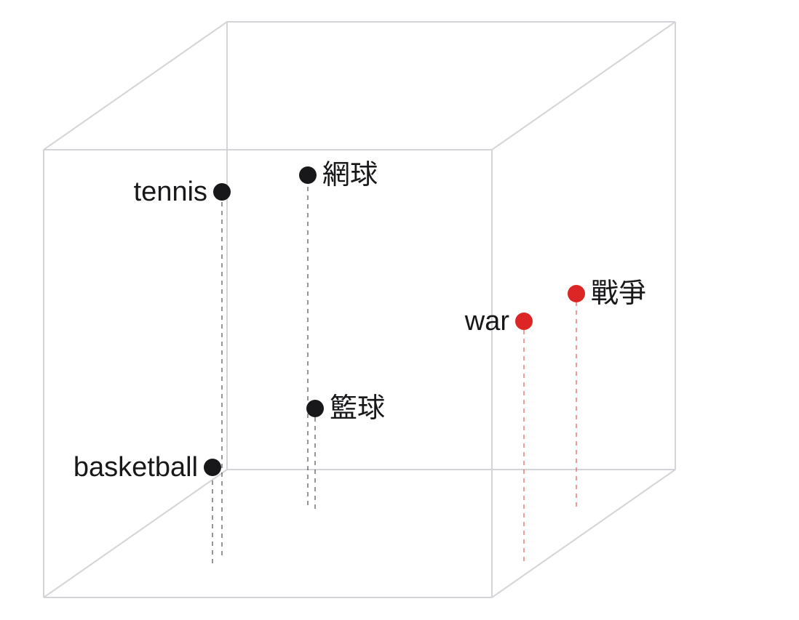
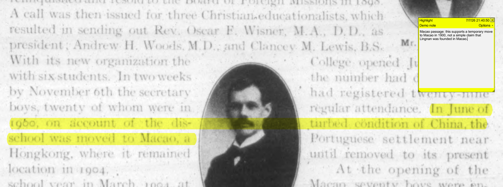

Session One walks through a research workflow with large language models, through a coding agent: tools and notes, finding sources, skills, searching within sources, reading and synthesis, using the early history of Lingnan.
Six modules form one research loop: models and harness, notes, finding sources, skills, searching within sources, and reading and synthesis. A five-minute break follows Module 2; verification comes next week.
DeepSeek V4.1 Flash beats 16 of 40 models: they cost more and score lower.

Chart by the workshop from Artificial Analysis leaderboard data, read 6 Nov 2026
On a chart of score against price, DeepSeek V4.1 Flash beats 16 of 40 models outright and sits at the top of the open-weights frontier: no open model is both cheaper and better. Among all models, Claude Haiku 5.5 is cheaper and slightly higher.
Why DeepSeek is used so much: subscriptions and regions.
Service
Subscription, US$ per month
Hong Kong
Mainland China
Claude
20 – 200
no
no
ChatGPT
20 – 200
no
no
Gemini
20 – 250
yes, but not frontier models like Argon
no
GLM
from 18
yes
yes
DeepSeek
no official plan; through OpenCode Go and others
yes
yes
Much use of Claude, ChatGPT and Gemini runs through subscriptions that OpenRouter does not see, and those services are restricted in Hong Kong and mainland China; DeepSeek has no official subscription but is offered through third-party plans such as OpenCode Go, and works in both.
The card of the model we use: DeepSeek V4.1 Flash 1017.
Maker
DeepSeek
Generation
V4.1
Tier
Flash
small, fast; a newer Flash beats an older Pro (33 vs 23)
Release
1017
Score
33
a composite of tests: knowledge, reasoning, maths, coding
Context
1M tokens
how much it sees at once
Input
$0.30 / 1M
per million tokens; a token is a piece of text
Output
$1.20 / 1M
writing costs 4× reading
Cached input
$0.01 / 1M
Speed
173 tokens/s
First answer
≈ 52 s at max
at max thinking; non-reasoning answers in ~1 s
Weights
open · MIT
anyone may run it
The full card of DeepSeek V4.1 Flash 1017: maker, generation, tier, release, score, context, input, output and cached prices, speed, time to first answer, and open weights.
Price is per million tokens; writing costs more than reading.
ModelDeepSeek V4.1 FlashTierFlashScore33Input · per million tokens$0.30Output · per million tokens$1.20ThinkingmaxContext1 million tokensWeightsopen
The task
read a 300-page book: about 160,000 tokens
write a 5-page summary: about 4,000 tokens
DeepSeek V4.1 Flash
Gemini 4 Carbon
Reading, per million tokens
$0.30
$4
Writing, per million tokens
$1.20
$20
Read the book
$0.048
$0.64
Write the summary
$0.005
$0.08
The task
about $0.05
about $0.72
Reading a 300-page book and writing a 5-page summary costs about $0.05 with DeepSeek V4.1 Flash and about $0.72 with the leading model, Gemini 4 Carbon; thinking tokens are charged as writing.
ModelDeepSeek V4.1 FlashTierFlashScore33Input · per million tokens$0.30Output · per million tokens$1.20ThinkingmaxContext1 million tokensWeightsopen
What counts
your instructions
the files
earlier turns and tool results
Found, by length of input
4–8K
97.3%
8–16K
91.4%
16–32K
97.2%
32–64K
90.5%
64–128K
86.0%
128–256K
79.3%
256–512K
57.5%
512K–1M
36.6%
The context window is everything the model sees at once, one million tokens here. In OpenAI's long-context test, GPT-5.4 finds 90% or more of what it is asked for in short material but only 37% near one million tokens; give selected, numbered excerpts instead.
ModelDeepSeek V4.1 FlashTierFlashScore33Input · per million tokens$0.30Output · per million tokens$1.20ThinkingmaxContext1 million tokensWeightsopen
Provider
Input, per million tokens
Output, per million tokens
Precision
Relace
$0.006
$0.50
fp4
DeepInfra
$0.112
$0.336
fp8
Baidu
$0.13
$0.52
fp8
Google
$0.30
$1.20
—
Together
$0.30
$1.20
—
Because DeepSeek published the weights, 38 providers run the same model on OpenRouter, at different prices and precisions, and with different data policies.
A Gemini chat: a pasted paragraph with spelling mistakes, and the corrected version returned as text. (Image shown in class only.)
Screenshot of Google Gemini, DHG508 (2026)
OpenCode · art-ai-workshop-2026
@my-work/research/lingnan-note.mdPlease proofread this note.← Edit my-work/research/lingnan-note.md
- Lingnan begun as Canton Christian Collage in 1888.+ Lingnan began as Canton Christian College in 1888.- In June 1900 the school were moved to Macao,+ In June 1900 the school was moved to Macao,Four fixes, no wording changed.
Build · DeepSeek V4.1 Flash · OpenCode Go · max
A chat returns corrected text that you copy back by hand; an agent opens the file, edits it and saves it.
What is a harness? The program between you, the model and your computer.

Diagram by the workshop
The model only reads and writes text. OpenCode, the harness, gives it tools on your computer: reading, editing and writing files, running commands, searching the web, and asking your permission.
Several harnesses do the same job, with different models and rules.
Harness
Maker
Models
Open
You pay
Our view
Pi
M. Zechner
almost any
yes
the provider
most flexible; harder
OpenCode
Anomaly
almost any
yes
provider, or Go
used today
DeepSeek Harness
DeepSeek
mostly DeepSeek
yes
the DeepSeek API
promising; growing fast
Claude Code
Anthropic
Claude
no
plan or API
Codex CLI
OpenAI
GPT
yes
plan or API
Antigravity CLI
Google
Gemini
no
plan
WorkBuddy
Tencent
Hy, DeepSeek …
no
free; Pro $10
not recommended
Pi, OpenCode, Claude Code, Codex CLI and Antigravity CLI all let a model work on your files; they differ in models, price and their own instructions to the model. Pi is the most flexible; DeepSeek Harness is new and growing fast; today we use OpenCode.
Underneath: we give the model a tool, it asks for it, OpenCode runs it.
Question: 光緒二十六年是公元哪一年？
1 · The tool we give it
dynasty_years
turns a reign year into Western dates
2 · The model asks for it
dynasty_years
era 光緒, year 26
3 · OpenCode runs it
31 Jan 1900 – 18 Feb 1901
the model answers: mostly 1900
Tool calling: we give the model a tool (here dynasty_years, which turns a reign year into Western dates); the model asks for it with the reign and year; OpenCode runs it and returns a small JSON result; the model answers from that result.
Programmers now direct agents; for scholars the stakes are higher.
Programmers
describe the task; the agent writes the code
many no longer read every line
tests catch mistakes; they can iterate
Scholars
the agent may silently rewrite a sentence
one misquoted line is misconduct
so we borrow their tests and verification
For scholars the risk is higher than for programmers: an agent can silently change a quotation while editing, and one misquoted line is misconduct. We borrow programmers' habits of testing and verification.
Without search, even the best AI models get 1 in 4 answers wrong: Claude Opus 5.5 and GPT-6 Astra 23%, down to MiMo-V2.6-Pro 43%. (Image shown in class only.)
Chart by Randal S. Olson; data: Artificial Analysis Intelligence Index v4.3, 29 Sep 2026
For us, as academics
AI that can tackle Fields-Medal-level maths still gets basic facts wrong
it remembers only roughly: intelligence, not a knowledge base
so give it knowledge: your sources, databases it can query
and guardrails: another agent checks its work
that is how we deal with our biggest fear: making things up
A model is intelligence, not a knowledge base: without search, even the best models get about one in four specific facts wrong. Pair it with your own data and set guardrails around it, and only then is it a tool for scholarship.
OpenCode comes as a desktop app and as a terminal program; we use the terminal.
Desktop app
a window like any other app
easiest to install on Windows
fine to use; catching up
Terminal · recommended
the full and fastest version
opens inside any folder
on Windows, install WSL first: well worth it
OpenCode comes as a desktop app and as a terminal program. The terminal version is the fullest and fastest; on Windows it needs WSL first, which is worth the effort. The desktop app is fine too.
OpenCode Go: $10 a month buys $100 of DeepSeek V4.1 Flash.
Every five hours you may use 20% of the monthly limit; off-peak hours cost half.
Model
Monthly limit, Go ($10)
Requests per 5 hours
Requests per month
DeepSeek V4.1 Flash
$100
43,330
216,670
GLM-5.3-Flash
$60
6,320
31,580
DeepSeek V4 Pro
$15
1,050
5,200
Kimi K3
$15
110
490
OpenCode Go costs $10 a month (Go Plus $40), with request allowances per five hours that vary by model: 43,330 for DeepSeek V4.1 Flash, 110 for Kimi K3.
opencode.ai home page with the Console link marked. (Image shown in class only.)
opencode.ai, captured 6 Nov 2026
2 · Account → Add API key
Personal API keys with the Add API key button marked; key values removed. (Image shown in class only.)
opencode.ai, captured 6 Nov 2026; key values removed
3 · /connect
Connect a providerOpenCode GoAPI keyoc_sk_••••••••
4 · /models
Select model● DeepSeek V4.1 FlashOpenCode Go
GLM-5.3 OpenCode Go
Kimi K3 OpenCode Go
Open opencode.ai, go to the Console and sign in; under Account, add an API key and copy it; in OpenCode type /connect, choose OpenCode Go and paste the key; then type /models and choose DeepSeek V4.1 Flash. Keep the key private.
A note with four mistakes; one sentence asks OpenCode to fix spelling and grammar only; it edits the file in place, shows the four changes, and changes no wording.
Where the training data comes from: nearly everything that can be read.
Web
1 trillion pages, crawled at about 10 billion a day
Documents
2 billion scientific PDFs, read by OCR
Books
50 million books, layout reordered, garbled text filtered
Code
500 million repositories, turned into tasks with real tests
Video
10 billion videos
Audio
300 million hours, transcribed into trillions of tokens
A frontier model is trained on nearly everything that can be read: about a trillion web pages, two billion scientific PDFs, fifty million books, half a billion code repositories, ten billion videos and three hundred million hours of audio.
Your data goes by one of five routes to a provider, the company that runs the model. A local model is safest: nothing leaves. The official API, OpenCode Go and OpenRouter rate the same: your content may be read and is likely to be used for training. A reseller is the least safe: your data passes through its own database and may be leaked or sold, though not necessarily trained on.
no keys or passwords in files; read others' skills first
Official API, OpenCode Go, OpenRouter
the route and the provider; kept 0–30 days; may train
opt out of training; check each provider's retention and region
Reseller (中转站)
everything passes through its own database; many are known to sell it
avoid it
Local model
nothing leaves
costs money and power (see next)
Each step carries its own risk: the harness keeps logs on your disk; a reseller sees everything and may keep or resell it; a router passes your requests on; providers keep data for up to 30 days and may train on it. Opt out of training, check retention and regions, avoid resellers, and use a local model for the most sensitive material.
Two recent cases: what you send may be read, kept, or learned from.
OpenAI · Sept–Oct 2026
mathematicians say its new proofs drew on their unpublished work and their ChatGPT and Codex sessions
OpenAI denies it, but cannot rule out that de-identified user data improved its models
Anthropic · Sept 2026
its public threat report described what users had sent to Claude
including sensitive details about another company's customers
Allegations and reports, not settled findings; the lesson holds either way.
Two recent cases: mathematicians allege that OpenAI's announced proofs drew on their unpublished work and chat sessions, which OpenAI denies; Anthropic's public threat report described the content users had sent to Claude. What you send may be read, kept or learned from.
strictly confidential: a local model, or the university's own service
Settings
“help improve our models”: off
“share your data?”: no
Habits
nothing private in a conversation: names, keys, passwords
clean up local logs, or keep them somewhere safe
Never use a reseller, and prefer the official API. Turn off "help improve our models" and decline to share your data. Keep names, keys and passwords out of conversations, and clean up or safely store local logs. For strictly confidential material, use a local model or the university's own service.
A local model: nothing leaves, but it is not yet practical.
capable open-weight models need hardware of HK$100,000 or more
then each run costs almost nothing; through an API it is cheap to start
open-weight models now reach about last year's frontier, but the largest are hard to host
My estimate: two to three years before the intelligence we need runs on our own machines.
A local model is the only full protection, since nothing leaves your machine, but it is not yet practical: capable open-weight models need hardware of HK$100,000 or more, and the largest are hard to host. Bo's estimate: two to three years before the intelligence we need runs locally.
Start from a ranking, the price and the context window; then test on ten of your own images. Module 5 compares OCR and vision models on one line.
—
我的材料會不會外洩？
No route can guarantee it. Only a local model keeps it on your computer; official APIs and routers may read and train on it; resellers leak it. Use the checklist.
The participants' questions for Module 1, each with a short answer drawn from the slides before.
Keep two kinds of document: a design doc and a log.
Design doc
where the project stands now
rewritten as you go
Log
what happened, by date
only ever added to
Keep two kinds of document: a design doc that describes where the project stands now and is rewritten as it changes, and a log that records what happened by date and is only added to.
Create my-work/research/design-doc.md for my Lingnan project.Question: Lingnan's beginnings, 1888–1904: where did it begin,and what did it teach? Add sources so far and next steps. Keep it short.← Write my-work/research/design-doc.md
Created my-work/research/design-doc.md.
I deliberately did not add historical facts beyond your note.▣ Build · DeepSeek V4.1 Flash · 28.4s
Build · DeepSeek V4.1 Flash · OpenCode Go · max
OpenCode can create the project's design doc from one instruction: the question, the sources so far, and the next steps. The result is a file in the workspace, not a message in a chat.
# Design Doc — Lingnan Project
## Question
Lingnan's beginnings, 1888–1904:
where did it begin, and what did it teach?
## Sources so far
- lingnan-note.md: three dates, no citation yet — unverified
## Next steps
1. Verify the dates against one primary source.
2. Start a log of every search.
A design doc is a Markdown file: a heading, a question, the sources so far, and the next step. It stays readable as plain text in any editor.
# Lingnan's beginnings
## Sources
- memoir, 1954
1. read the 1908 booklet
the college opened in **1899**
see [Digital Commons](https://commons.ln.edu.hk)
> the school was moved to Macao
open `log.md`
Seven Markdown marks cover most notes: # and ## for headings, - for a list, 1. for a numbered list, ** for bold, text for a link, > for a quotation and backticks for code. The full syntax is on the Markdown Guide cheat sheet.
Word packages layout and text together and needs conversion; Notion keeps your notes on its servers; Markdown is plain text on your disk that any editor and any agent can read; LaTeX is plain text with commands, for papers, next week.
Google AI Overview answering that Lingnan University was founded in Guangzhou in 1888, moved to Macau in 1900 and returned in 1904. (Image shown in class only.)
Google AI Overview for 'Was Lingnan university founded in Guangzhou or Macau?'. Screenshot of Google Search, DHG508 (2026), Screenshot for teaching commentary
敖士洲 · memoir manuscript
Manuscript column: 本校在此國情之際，大抵於一八九九年開始租屋創辦於澳門 — the school was probably founded in rented premises in Macao around 1899. (Image shown in class only.)
敖士洲《五十年前之嶺南》 (1954), manuscript, detail.. Lingnan University Library, Library manuscript, reproduced for teaching
A quick AI answer says Lingnan began in Guangzhou in 1888; a memoir written in 1954 says it began in rented rooms in Macao around 1899. Neither settles the question, so we look for the earliest original.
Write it down: tell OpenCode what you found and what comes next.
Tip: dictate instead of typing; voice input is much faster for instructions.
OpenCode · art-ai-workshop-2026
I searched quickly myself. An AI answer says Guangzhou, 1888;a 1954 memoir says Macao, c. 1899. Add this to my log, and notewhat I want next: more sources, starting with the 1908 booklet.← Edit my-work/research/log.md
Added today's entry: question, findings, next step.▣ Build · DeepSeek V4.1 Flash
Build · DeepSeek V4.1 Flash · OpenCode Go · max
my-work/research/log.md
## 6 Nov 2026
Question: where did Lingnan begin? (first half)
Found: an AI answer (Guangzhou, 1888) and a 1954
memoir (Macao, c. 1899) disagree.
Next: more sources, starting with the1908 college booklet.
Tell OpenCode what you found and what you want next; it appends a dated entry to the log: the question, the two disagreeing answers, and the next step, the 1908 college booklet.
Keep notes in plain text: quick to search, always saved, never locked in, no version trouble. A design doc you rewrite, a log you add to. Edit them in VS Code or Obsidian.
11.1
如何用 AI 協助構思與檢驗新想法？
Talk with it and let it write your notes. More in later modules.
The participants' questions for Module 2, each with a short answer drawn from the slides before.
the core for most of us, but no API: you search, or a third-party API
A collection with an API
the Met, its own database: its API
A site made for people
no API, only a search box: a browser
Choose the search by the source: built-in web search for a quick question; an API for a scholarly index such as OpenAlex or a collection such as the Met; Google Scholar by hand or through a third-party API; a browser for a site made only for people.
Built-in web search: fine for a quick question, not for research.
OpenCode · art-ai-workshop-2026
Find one early primary source on when and where Lingnan was founded.Web SearchAllow OpenCode to search the web for up-to-date information?1. Allow search via Exa, Firecrawl, Parallel, Tavily, TinyFish→ Explored: 2 searches
→ Explored: 2 fetches
→ Explored: 1 fetch, 1 search
… 3 minutes, 130K tokens, no source settled
Build · DeepSeek V4.1 Flash · OpenCode Go · max
It sees only part
no catalogues or databases behind a login
weak on old and Chinese names
no record of where it looked
OpenCode can search the web by itself, which is fine for a quick question. But it cannot reach catalogues behind a login, is weak on old and Chinese names, and keeps no record of where it looked.
Let the agent use the API, with your own free key.
1 · The website: “use our API”
OpenAlex page: Looks like you're a bot — please use our free API instead. Free key, own $1/day budget. (Image shown in class only.)
Screenshot of openalex.org, 6 Nov 2026
{
"error": "Rate limit exceeded",
"message": "Anonymous search is temporarily
rate-limited while the search cluster is under
elevated load. Please retry in 36s, or use a
free API key for uninterrupted access."
}
The OpenAlex website sends agents to its API, and the API without a key can be throttled at busy times. Let the agent use the API with your own free key.
Agents are fluent with APIs: if a source has one, tell the agent to use it.
Why an API
built for programs, so agents read it easily
exact fields: title, year, author, link
the same request gives the same answer
Get a key
most APIs need one, like OpenCode Go
OpenAlex: free key, $1 of searches a day
without a key: $0.10 a day, shared
Agents use APIs fluently, so if a source has an API, ask the agent to use it. Most APIs need a key: OpenAlex gives a free key with $1 of searches a day; without one there is $0.10 a day, shared.
Search OpenAlex for "Canton Christian College curriculum" with curland save the first ten results to my-work/sources/processed/.$ curl -s "https://api.openalex.org/works?search=Canton+Christian+College+curriculum&per-page=10" -o openalex-ccc-curriculum.json
Saved: my-work/sources/processed/openalex-ccc-curriculum.json
Matches: 2,071▣ Build · DeepSeek V4.1 Flash · 1m 32s
Build · DeepSeek V4.1 Flash · OpenCode Go · max
OpenCode sends the OpenAlex query with curl and saves the first ten results as JSON; tonight the index reported 2,071 matches.
What comes back is data, and the first hit can be irrelevant.
{
"meta": { "count": 2071 },
"results": [
{ "title": "The Development of a Program in Humanities
for the Junior College Curriculum",
"publication_year": 1961,
"id": "https://openalex.org/W289137080" },
…
]
}
The JSON reports 2,071 matches, and the first is a 1961 junior-college humanities study: data, not yet a relevant source.
Yangqin, Shop of Refined Tones, Guangzhou (Canton), 19th century. The Metropolitan Museum of Art, The Crosby Brown Collection of Musical Instruments, 1889 (Open Access, CC0)
Museum collections have APIs too. Searching the Met's API for "Canton" returns 1,693 works with images; the first is from Canton, Ohio, the second a 19th-century yangqin made in Guangzhou, with its maker, city, date and public-domain status in fixed fields.
On top of an API, the agent can build you a small search engine.
OpenCode · art-ai-workshop-2026
Make a simple Google-style search page for the MetCollection API: one search box; for each result showthe image, title, artist, date, and public domain.← Write session-01/examples/met-search/index.html
Open it in your browser and type a search.▣ Build · DeepSeek V4.1 Flash
Build · DeepSeek V4.1 Flash · OpenCode Go · max
session-01/examples/met-search/

Page built for the workshop on the Met Collection API; images: The Metropolitan Museum of Art, Open Access
On top of an API, the agent can build a small search page of your own: one sentence describes it, and the page fetches results from the Met's API and previews them, with image, title, artist, date and rights.
Google Scholar has no API: you search, or use a third-party one.
Third-party APIs such as Serper work, but Google does not allow them. Here the agent suggests the queries.
OpenCode · art-ai-workshop-2026
I will search Google Scholar and Baidu myself. Suggest five queriesfor each, in English and Chinese, for: what did early Lingnan teach?+ Thought · 5.4s
Google Scholar (English)
1. "Canton Christian College" curriculum 1888 1904
3. Happer "Christian College" Canton secular curriculum English Chinese classics
Baidu (Chinese)
1. 岭南大学 前身 格致书院 课程 1888
3. 岭南学堂 1904 康乐 学制 课程
▣ Build · DeepSeek V4.1 Flash · 8.2s
Build · DeepSeek V4.1 Flash · OpenCode Go · max
Google Scholar, Bing and Baidu do not allow automated searching, so you search them; the agent suggests queries in English and Chinese, including old names such as 格致书院.
Give the agent a browser: a Chrome MCP, or agent-browser.
It can click “buy” or “send” as easily as “search”: never give it your passwords.
Chrome DevTools MCP
drives your own Chrome
sees what you see, logged in
ask the agent to set it up
agent-browser
a browser made for agents
already in the workspace
installed as a skill
You
log in, solve CAPTCHAs
approve each action
keep private pages closed
An agent can use a browser through a Chrome DevTools MCP (your own Chrome) or a browser made for agents (agent-browser). It can click "buy" or "send" as easily as "search": you log in, approve its actions, and never give it your passwords.
The agent turns the data into a reading list you can check.
my-work/research/reading-list.md
| Year | Author | Title |
|------|----------|----------------------------------------------------|
| 2008 | Barwick | Faith, Identity, and Nationalism … Christian Colleges |
| 2018 | Mou | The Liberal Arts Curriculum in China's Christian … |
| 2002 | Bolton | Chinese Englishes: from Canton jargon to global … |
The JSON becomes a short reading list with year, title and author; the next step is still to open each work and judge whether it answers the question.
Where to download depends on where the source lives: on the open web, the agent downloads it; when a login or CAPTCHA blocks it, you log in and the agent continues; library databases go through your library's access, in your logged-in browser.
Then let the agent tidy up: which folder, which names.
OpenCode · art-ai-workshop-2026
Move the PDFs I downloaded today into my-work/sources/raw/,rename each as author-year-short-title, and list them in my log.$ mv ~/Downloads/*.pdf my-work/sources/raw/← Edit my-work/research/log.md
Renamed 3 files:
ccc-1908-field-and-work-in-china.pdf
corbett-1963-lingnan-university.pdf
mou-2018-liberal-arts-curriculum.pdf
▣ Build · DeepSeek V4.1 Flash
Build · DeepSeek V4.1 Flash · OpenCode Go · max
After downloading, tell the agent which folder the files go into and how to name them; it moves, renames and logs them.
Record where you searched, under which names, and what you found.
my-work/research/log.md
## 6 Nov 2026 · what did early Lingnan teach?
OpenAlex "canton christian college" 31 hits, all read
OpenAlex 格致書院 122 · 嶺南學堂 16 · 岭南学堂 97 mostly unrelated
OpenAlex "Canton Christian College curriculum" 2,071 hits, top 10 saved
Met API "Canton" 1,693 objects; first hit is Canton, Ohio
Problem a script bug used up the day's OpenAlex budget:
queries 12–21 not saved, to redo tomorrow
Saved 3 PDFs to sources/raw/: 1908 booklet, Corbett 1963, Mou 2018
To do Google Scholar and Baidu, by me
Not yet: newspaper databases, Yale Divinity Library
A search log records the date, database, query, hits and what was saved, and above all where you have not yet searched.
Ready for research: next, make the sources searchable.
After three modules, the workspace holds a design doc with the question, a log, three PDFs, search results and a reading list: enough to start the research.
Partly. AI combines and speeds up existing resources and methods; it does not make missing material appear, and no "one-stop" academic AI exists. Combine the three ways, search every name, log the gaps.
02.3
如何協助取得與整理資料庫材料？
An API where there is one (with a free key), your logged-in browser where not; download through your library's access, keep to each database's terms, name every file by its source.
10.2
如何系統整理一個機構的線上資源？
Step by step: its API where it has one (as with the Met), the agent's browser where not; keep raw files, log every search, write the method as a skill.
The participants' questions for Module 3, each with a short answer drawn from the slides before.
Remember the search? With a skill, one sentence does it all.
OpenCode · art-ai-workshop-2026
Use the scholarly-search skill: find scholarshipon what early Lingnan taught, 1888-1904.← Write my-work/research/openalex_search.py
$ python3 research/openalex_search.pySaved: openalex-01 … openalex-10, one file per name
The skill behind it: a plain-text file, in plain language.
.opencode/skills/scholarly-search/SKILL.md
---
name: scholarly-search
description: Find scholarship on a research question. Prefer OpenAlex by API; Google Scholar through a third-party search API, or by me.
---
Search for scholarship on the question I give you.
- Prefer OpenAlex: query its API with my key; save the raw results
in my-work/sources/processed/.
- Decide whether the search needs expanding: other names of the
subject, other languages, older spellings.
- For Google Scholar and similar sites, use a third-party search API
(such as Serper) if one is set up; otherwise suggest queries.
- Make a reading list: year, title, author, link.
- Record every search in research/log.md, and what was not searched.
- Never describe a work you have not opened.
A skill is a short plain-text file: a name, a one-line description the agent keeps in mind, and the steps it reads when a task matches.
A prompt is said once; a skill is saved and used again.
.opencode/skills/format-paper/SKILL.md
---
name: format-paper
description: Format my paper in Chicago style.
---
Format the paper I give you in Chicago style,
notes and bibliography:
- footnotes, not author–date
- first note in full, later notes shortened
- bibliography at the end, by author's surname
- keep Chinese titles in characters, with pinyin
- change only the format, never my wording
- check each rule in Purdue OWL, Chicago 18th ed.
Prompt
typed into one conversation
gone when the conversation ends
you remember it and type it again
Skill
a file in your workspace, in plain language
read by the agent when the task fits
reusable and combinable, kept in Git
A prompt lives in one conversation and must be typed again; a skill is a plain-language file the agent reads when the task fits, reusable and combinable. The format-paper skill on the left is one example.
---
name: format-paper
description: Format my paper in
the style I name.
---
Ask which style, if I did not say.
- Chicago: use chicago-style
- another style: ask me first
Change only the format,
never my wording.
skills/chicago-style/SKILL.md
---
name: chicago-style
description: Chicago notes and
bibliography, 18th edition.
---
Check every rule in:
- Purdue OWL, Chicago 18th ed.
- the manual: references/cmos-18.pdf
In short:
- first note in full:
Charles Hodge Corbett, Lingnan
University (1963), 31.
- later notes: Corbett, Lingnan, 31.
- Chinese titles: characters, pinyin
Keep skills short, plain and single-purpose, so one can call another: format-paper asks which style and hands Chicago to chicago-style, which points to Purdue OWL and the manual and sums up the common forms in plain language.
You need not write a skill yourself: the agent writes it, you test it.
OpenCode · art-ai-workshop-2026
That search worked. Save it as a skill calledscholarly-search: every name we used, which sitesI search myself, the steps, and what to check.Keep it short.← Write .opencode/skills/scholarly-search/SKILL.md
Saved. Next time say "use scholarly-search".▣ Build · DeepSeek V4.1 Flash
Build · DeepSeek V4.1 Flash · OpenCode Go · max
Then, like a teacher
ask it to save what worked
run it, and watch what it does
give it a standard to meet
if it falls short, it revises the skill itself
Ask the agent to save what worked as a skill. Then act like a teacher: run it, give it a standard to meet, and let it revise the skill itself when it falls short.
Skills are folders, so they travel: copy someone else's into .opencode/skills/ after reading it, and share your own with your team through Git. The workshop's seven skills are a place to start.
State five things: purpose, material, action, output, and how it will be checked. When a request works, save it as a skill.
07.1
如何把視覺觀察寫成可檢查的方法？
Give explicit observation rules with an example, as a skill: describe what is visible and where before interpreting; ask neutrally. No training needed.
The participants' questions for Module 4: how to ask so the help can be checked, and how to turn a visual method into rules an agent can follow.
Module 3 found the documents; now we find what is in them.
Module 5 searches within the sources we already hold: ask the agent to search, then deal with two problems: sources that cannot be searched yet, and too many hits to use as they are.
liberal arts curricula, a thesis · text, searchable
1908 booklet
Canton Christian College · scanned pages
敖士洲 1954
《五十年前之嶺南》 · a manuscript, images only
One question, what did Lingnan teach between 1888 and 1904, and four sources: two are searchable text, one is scanned pages and one is a manuscript in images.
Just ask: the agent searches your files, expanding the words.
OpenCode · art-ai-workshop-2026
Find every page about what early Lingnantaught, in English and Chinese.$ rg -l -i "curriculum|courses|taught|Bible"$ rg -l "課程|課目|英文|漢文|聖經|體操"← Write my-work/research/notes/hits.md
Hits in Corbett and Mou, ranked.The memoir is images only: not searched.
Build · DeepSeek V4.1 Flash · OpenCode Go · max
my-work/sources/raw/
├─ corbett-1963.pdf ✓ text
├─ mou-2018.pdf ✓ text
├─ ccc-1908.pdf ? scans
└─ memoir-1954/ ? images
Asked once, the agent expands the question into English and Chinese terms, searches the files and writes a ranked list to research/notes/hits.md; it reports that the memoir, being images only, could not be searched.
It shows you where: each hit with its source, page and snippet.
my-work/research/notes/hits.md
# Source Place Terms Text around the first match
1 Corbett 1963 p. 31 6 the Chinese classics… a Sunday Bible Class
2 thesis (2018) PDF 61 6 literature of China. Translation from English…
…
memoir (1954) manuscript images: not searchable yet
The agent lists each hit with its source, page, the number of terms and a snippet, so you know where to look; the manuscript memoir is not searchable yet.
the agent cannot read them for you, and you cannot simply trust it: it can make things up
Two problems: some sources cannot be searched yet (scans, manuscripts); and there are too many hits to use as they are, since the agent cannot read them for you and may make things up.
A scan is only pixels, with no text to search. OCR turns it into text: PaddleOCR from Baidu is free, online at AI Studio or on your own computer, and gives each line with its position on the page.
For ordinary OCR, the agent writes the calls and runs the batch.
OpenCode · art-ai-workshop-2026
OCR @my-work/sources/raw/ccc-1908.pdf and every image in@my-work/sources/raw/memoir-1954/ with the PaddleOCR API.My token is in PADDLE_TOKEN. Save one text file per page tosources/processed/, then tell me which pages to check first.← Write my-work/research/ocr_batch.py
$ python my-work/research/ocr_batch.py ccc-1908.pdf memoir-1954/
ccc-1908-p001.txt … memoir-p001.txt … (no uploads by hand)Done. Check memoir p. 2 first: most low-confidence lines.▣ Build · DeepSeek V4.1 Flash
Build · DeepSeek V4.1 Flash · OpenCode Go · max
For ordinary OCR, the agent's help is around the tool: it writes the API calls, runs every page in a batch, saves one text file per page, and tells you which pages to check first.
A vision model can transcribe too: OpenCode writes the request.
OpenCode · art-ai-workshop-2026
Transcribe @my-work/sources/raw/shangbao-1923-c05.jpgwith Gemini Flash through OpenRouter, using thetranscribe-faithfully prompt. My key is inOPENROUTER_API_KEY.← Write my-work/research/transcribe.py
$ python my-work/research/transcribe.py …c05.jpgSaved sources/processed/shangbao-1923-c05.txt▣ Build · DeepSeek V4.1 Flash
Build · DeepSeek V4.1 Flash · OpenCode Go · max
{
"model": "google/gemini-3.8-flash",
"temperature": 0,
"messages": [{ "role": "user", "content": [
{ "type": "text", "text":
"Transcribe this page faithfully. Copy the text exactly, in its original script. Keep the line breaks. Do not correct, modernise, translate or complete anything. Write [?] for a character you cannot read." },
{ "type": "image_url",
"image_url": { "url": "data:image/jpeg;base64,…" } }
]}]
}
A vision model can transcribe a page. Ask OpenCode to send the image to a model through OpenRouter with your key; it writes the request: model, temperature 0, a faithful-transcription prompt and the image.
Both err: OCR drops a character; the model rewrites a name.
《商報》 1923 · one column
One printed column from the 1923 Shangbao notice: 鄙人茲因醫務日繁不遑兼顧科發藥房華總經理事已向. (Image shown in class only.)
《商報》, 2 Sept 1923, p. 1, block c05; DH guide, Anatomy of the Newspaper
The page
鄙人茲因醫務日繁不遑兼顧科發藥房華總經理事已向
PaddleOCR (Baidu)
鄙人茲因醫務日繁不_兼顧科發藥房華總經理事已向 遑 missing: a gap you can see
Gemini Flash
鄙人因業務日繁不遑兼顧科學醫藥學總經理事務已向 fluent, and a different firm
On one 1923 column, PaddleOCR left out one character (遑), a visible gap; Gemini Flash read fluently but rewrote the firm's name, 科發藥房 into 科學醫藥. Both make mistakes; only one hides them.
Still check the page: on memoir p. 2 the OCR read 國文 as 图文.
my-work/research/notes/hits.md
# Source Place Terms Text around the first match
1 memoir (OCR) p. 2 9 为广学班四年畢业…全程课目有聖经英…
2 Corbett 1963 p. 31 6 the Chinese classics… a Sunday Bible Class
3 thesis (2018) PDF 61 6 literature of China. Translation from English…
… 107 pages
After digitization the memoir joins the search: page 2 now tops the list with nine terms, out of 107 pages in all. The OCR still hid one word, 國文, read as 图文.
To search a picture, turn it into words: its subject, and its style.
Hall of Quiet Study · Canton, 19th century
Hall of Quiet Study, anonymous, Canton, 19th century, watercolour. The Metropolitan Museum of Art, Gift of Harry G. Friedman, 1959 (Open Access, CC0)
hall-of-quiet-study.description.md (AI-generated)
## Subject
An elevated view from a verandah into a three-bay Chinese interior.
- Left room: a man in a blue gown at a desk, writing or reading with a brush.
- Centre: a second man lounges on a low daybed; hanging scrolls behind.
## Style and medium
Watercolour with opaque body colour (gouache) on paper.
- Ink outline, flat bright colour; one-point perspective.
## Visible text
- Plaque 靜觀自得; couplet 半夜書聲月在天
## Guesses
- Canton export painting, c. 1830–1870. Reason: green-lacquer joinery, glass bell jars, flat bright watercolour.
- A scholar's studio (書齋). Reason: plaque and couplet are about reading.
A picture cannot be searched until it is put into words. The describe-image skill writes what is shown, the style and medium (watercolour and gouache), the visible text (靜觀自得), and only then its guesses, each with a reason.
Search the image descriptions: by keyword for "watercolour",then by meaning for "a scholar reading in his study".$ rg -il "watercolour" sources/processed/*.description.md
hall-of-quiet-study "Watercolour with opaque body colour (gouache)"$ search by meaning: "a scholar reading in his study"0.69 hall-of-quiet-study"a man … writing or reading"; "a scholar's studio"
0.60 ju-lian-insects-and-flowers
▣ Build · DeepSeek V4.1 Flash
Build · DeepSeek V4.1 Flash · OpenCode Go · max
Once each picture has a description, a keyword search for "watercolour" finds the Canton study, and a search by meaning for "a scholar reading in his study" ranks it first (0.69) because its description mentions a man reading and a scholar's studio.
A page with pictures and text: transcribe and describe in one pass.
The page says Macao is “near Hongkong”, not that the school went on to Hong Kong.
1908 booklet, p. 9
Canton Christian College: its field and work in China (1908), printed p. 9 / scan p. 12. Digital Commons @ Lingnan University.. Canton Christian College Trustees, 1908 (Untouched scan in my-work/sources/raw/), Public domain
ccc-1908-p12.description.md
Visible
- Centre: oval portrait; caption "Rev. Oscar F. Wisner, D.D."
- Bottom left: oval portrait; caption "Mr. David Torrens"
- Text: the College "opened June 3, 1899" with six students;
a move to Macao in 1900 … then Hong Kong
Guesses (marked)
- Canton Christian College: a guess from the place names,not from any title on the page
- Date c. 1908: from the 1907 enrolment figures
The model lists what is visible (portraits, captions, key sentences) before its guesses, and marks each guess with its basis.
For "what subjects were taught?", a keyword search finds none of three passages; a semantic search ranks the Chinese memoir's course list first (0.72), with no shared word and across languages.
An embedding turns a text into numbers; close meanings sit close.
3,072 dimensions, projected to three

Vertex AI gemini-embedding-001, 6 Nov 2026; projection (PCA) by the workshop
Similarity
tennis · basketball: 0.72
tennis · war: 0.59
tennis · 網球: 0.80
war · 戰爭: 0.77
each word: 3,072 numbers
An embedding model turns a text into a list of numbers, a point in space; close meanings get close points. Tennis and basketball sit together, war apart, and each word sits next to its Chinese counterpart (tennis and 網球: 0.80).
Abstract themes are harder to search: 'the passing of time'.
the idea is rarely named
it is said in many words
and across languages and traditions
Ecclesiastes 1:4 (KJV)
“One generation passeth away, and another generation cometh: but the earth abideth for ever.”
About time passing, yet the word “time” never appears, and “passeth” is not “passing”.
Abstract themes such as the passing of time are rarely named directly; they are said in many words, across languages and traditions, so a single keyword fails.
Ask for a one-line note on every passage, in one language.
OpenCode · art-ai-workshop-2026
For each passage in@my-work/sources/processed/passages.mdwrite ONE line of synopsis in simplifiedChinese, using the same key terms whereverthe idea is the same. Save them tomy-work/research/notes/synopses.md.← Write my-work/research/notes/synopses.md
▣ Build · DeepSeek V4.1 Flash
Build · DeepSeek V4.1 Flash · OpenCode Go · max
my-work/research/notes/synopses.md (AI-generated)
P1 Analects 9.17 孔子站在河边感叹，时间流逝就像这河水，昼夜不停。
P2 Plato on Heraclitus 万物皆变、无物常住，用河流比喻时间流逝……
P3 Ecclesiastes 1:4 一代人过去、另一代人又来，这是世代更替，而大地长存。
P4 Marcus Aurelius 把时间流逝比作事件的河流……
P5 蘇軾《赤壁賦》 苏轼说时间流逝像这河水，却未尝真正流走……
P6 敖士洲 memoir p. 3 星期日下午，教师……到公园、海滨或僻静之处游行。
The model writes a one-line Chinese synopsis for each passage, using the same term, 时间流逝, wherever the idea is the same.
One search finds four, and the model flags where they differ.
OpenCode · art-ai-workshop-2026
Search 时间流逝 (synopses only) → P1, P2, P4, P5
- P3 does not match … it talks about generations dying and coming
rather than a flow of time. If you consider generational succession
a form of 时间流逝, P3 is a borderline case.
- P5 matches, but says the opposite of P1/P2/P4. 苏轼 borrows
逝者如斯 and then denies it (而未嘗往也). A term-based search finds it
because the image is shared; the claim is not.
▣ Build · DeepSeek V4.1 Flash · 51.7s
Build · DeepSeek V4.1 Flash · OpenCode Go · max
Searching the synopses for 时间流逝 finds four passages across languages; the model notes that Su Shi shares the image but argues the opposite, which only reading can settle.
107 pages: the agent lowers the density; you decide where to read.
Problem 2: too many hits to use as they are.
Too much to read
107 pages, three sources
→
Compressed
by the agent, with page numbers
→
Your time
close reading and checking, where it matters
A search returned 107 pages. The agent compresses them, keeping page numbers, so that you can decide where to spend your time on close reading and checking.
The agent drafts a review sheet; you decide where to start.
Three steps
107 pages of keyword hits
one review sheet, with reasons
a few pages, read closely by you
Then you collaborate: tell it what you found.
OpenCode · art-ai-workshop-2026
← Write my-work/research/review-sheet.md
Read first
memoir p. 2 the fullest course list: 圣经, 漢文 … 體操
Corbett p. 15 28 March 1888 opening
Corbett p. 22 the founding prospectus
Set aside
63 thesis pages 1919–1947: nothing on 1888–1904
8 index pages index lines: a high count means nothingNo page was opened: these are leads, not findings. · 59.8s
Build · DeepSeek V4.1 Flash · OpenCode Go · max
The agent turns 107 hits into a review sheet in a minute: read first, set aside, each with a reason, and "these are leads, not findings". Then you collaborate: it ranks, you open and read the pages, and you tell it what you found.
Read where your notes stay usable: often, that means a PDF.
Page
every mark keeps its page, and the original's printed page
Open
not locked in one app or a format that needs converting
Time
every note has a timestamp: this reading, or the next?
Tools
programs know the format; PDF tooling is mature
Whatever you read in, your marks should keep their page, stay out of any one app's lock-in, carry a timestamp, and be readable by programs. A PDF usually meets all four.
Mark the passage, comment beside it; the agent extracts both.
Corbett 1963, p. 31
A page of Corbett's history with the passage 'Early in July the situation became so alarming that the College ... was hastily transferred to Macao' highlighted, and a note by Bo An, 7/7/26 17:27:19, reading 'In July, 1900'. (Image shown in class only.)
Corbett, Lingnan University (1963); annotation by Bo An
You, in OpenCode
Use the extract-pdf-annotations skillon @sources/raw/corbett-1963.pdf
{
"file": "corbett-1963.pdf",
"printed_page": 31,
"type": "Highlight",
"text": "Early in July the situation became so alarming that the College … was hastily transferred to Macao",
"note": "In July, 1900",
"author": "Bo An",
"modified": "2026-07-07 17:27:19"
}
A highlight on Corbett (1963), p. 31, with a note "In July, 1900", signed and timed by the PDF reader. One instruction to OpenCode extracts the file, page, quoted words, note, author and time.
Two sources on Macao, read and extracted together.
1908 booklet, p. 9

Canton Christian College Trustees, 1908; annotation by Bo An
You, in OpenCode
Extract my annotations again, from@ccc-1908.pdf and @corbett-1963.pdf
[
{ "file": "ccc-1908.pdf",
"printed_page": 9, "scan_page": 12,
"text": "In June of 1900 … the school was moved to Macao",
"note": "a temporary move to Macao in 1900, not … founded in Macao",
"modified": "2026-07-07 21:40:50" },
{ "file": "corbett-1963.pdf", "printed_page": 31,
"text": "Early in July … transferred to Macao",
"note": "In July, 1900",
"modified": "2026-07-07 17:27:19" }
]
A second source, the 1908 booklet (printed p. 9, scan p. 12), says the school moved to Macao in June 1900. Both sources' annotations are extracted together, each with its pages, quotation, note and time.
The agent organises the notes; every line says where, whose and when.
my-work/research/notes/macao.md (organised by the agent from annotations.json)
## Macao, 1900
- [据] ccc-1908 p. 9: "In June of 1900 … moved to Macao"
← annotations.json #1 · marked 2026-07-07 21:40
- [据] corbett-1963 p. 31: "Early in July … transferred to Macao"
← annotations.json #2 · marked 2026-07-07 17:27
- [Bo] a temporary move in 1900, not a founding in Macao
- [AI] the two sources differ on the month: June or early July
- [AI] the memoir (1954) dates a founding in Macao to 1899
Ask of every line
its source and page?
whose: the source, mine or the AI's?
written when?
The agent organises the extracted annotations into a Markdown note. Ask of every line: what is its source and page, whose is it (the source's, yours or the AI's), and when was it written?
Source Says Written Kind
corbett-1963-p15 classes began 28 March 1888, Fati, 1963 secondary
Canton
ccc-1908-p12 "new organization" opened 3 June 1899 1908 near-primary
corbett-1963-p31 to Macao "early in July" 1900 1963 secondary
memoir-p1-quote 大抵於一八九九年…創辦於澳門 1954 memoir
google-ai-overview founded 1888 in Guangzhou 2026 AI summary
Disagree: 1888 vs 1899 · Canton vs Macao · June vs early July 1900
Asked to summarise five sources, the agent cites every claim, records each source's date and kind, and flags the disagreements: 1888 vs 1899, Canton vs Macao, June vs early July 1900.
After reading, I add my judgement; the synthesis sheet states the fact.
my-work/research/synthesis.md
## 1. When did Lingnan begin?
- [据] classes began 28 March 1888, Canton Corbett 1963, p. 15
- [据] "new organization" opened 3 June 1899 1908 booklet, p. 9
- [Bo · 6 Nov 2026] It began in Canton in 1888; 1899 was a reorganisation.
## 2. What was Macao to Lingnan?
- [据] moved to Macao "in June of 1900", until 1904 1908 booklet, p. 9
- [据] "Early in July" 1900, "hastily transferred" Corbett 1963, p. 31
- [据] 大抵於一八九九年…創辦於澳門 (written 1954) memoir, p. 1
- [Bo · 6 Nov 2026] A refuge for four years, not the founding place.
The month, June or July, stays open.
Fact: Lingnan began in Canton in 1888, and moved to Macao in 1900 for four years.
After reading, the researcher adds a judgement to each point, kept apart from the sources and the AI. Lingnan began in Canton in 1888 and moved to Macao in 1900 for four years; every line keeps its source and page.
Digitize each medium, but read them all as PDF: a painting prints to a high-resolution PDF, so you can mark it freely and the original is untouched. One format, kept for decades.
07.3
如何處理 AI 協作的原創性與責任？
Mark who wrote every line: the source, you, other scholars, the AI. The AI can forget to mark its own words, so Git records who wrote what (next week).
The participants' questions for Module 6, each with a short answer drawn from the slides before.
Your challenge for next week: how do you know your conclusion is true?
there is no settled method yet; the sciences are only starting on it
in writing and peer review, the question is already being asked
with archives it is harder still: sources are rare, scans and hands vary
Design your own way of verifying, and bring it next week; we start from it.
Next week's challenge: how do you know your conclusion is true? There is no settled method yet, and archives make it harder. Design your own way of verifying and bring it next week.
what can only you check: a hand, a source's weight, your own argument?
what can a language model check for you: quotations, pages, consistency?
stable pointers: can you find it again, on another machine, after the file has changed?
who wrote each line, and when: you, or the machine?
when did it change: is every edit dated?
one file, two voices: the AI's summary above, your thoughts below; how do you tell them apart?
Also worth trying
can every quotation be matched, word for word, in the source?
a fresh agent, given only the sources, checks each claim
is what you did not search recorded too?
Pointers, not answers: decide which checks only you can do and which a language model can do for you; keep stable pointers you can find again, a record of who wrote each line and when, dated edits, and a way to tell your thoughts from the AI's in one file. Also try matching every quotation word for word, a fresh agent checking each claim against the sources, and recording what you did not search.
When it misses your meaning, ask for options and choose.
OpenCode · art-ai-workshop-2026
Suggest three different next steps for my Lingnanproject, two lines each. Then draw the one I choose.
A Primary first: the 1908 booklet, then Corbett, then the memoir.
B Scholarship first: an OpenAlex reading list, then the sources.
C Pictures first: college photographs, 1899–1904.
A. Draw it and add it to the design doc.
When the agent misses your meaning, ask for several options and choose: here three possible next steps for the Lingnan project; the chosen one is drawn as a path in the design doc.
Another skill, agent-browser: it opens the page and saves the file.
OpenCode · art-ai-workshop-2026
Use agent-browser: open the 1908 booklet "Canton Christian College:its field and work in China" on Digital Commons @ Lingnan Universityand save the PDF to my-work/sources/raw/.$ agent-browser open "https://commons.ln.edu.hk/…"$ agent-browser click "Download"← Write my-work/sources/raw/ccc-1908.pdf
Saved: ccc-1908.pdf, 1908, Canton Christian College Trustees.▣ Build · DeepSeek V4.1 Flash
Build · DeepSeek V4.1 Flash · OpenCode Go · max
With the agent-browser skill, the agent opens a page in a real browser, as a person would, and saves the file into sources/raw/, on sites that allow it.
Each block is read on its own, turned the right way, then put in order.
Block c05
A single narrow vertical block, c05, cut from the page: a resignation notice set in vertical columns. (Image shown in class only.)
Block c05, 《商報》, 2 September 1923, p. 1.. DH guide, Anatomy of the Newspaper, Used as in the DH guide
Steps
cut
turn to reading direction
read
order and assign to its article
A block is read alone, first turned to its reading direction — PaddleOCR read c05 across the columns until the block was turned 90° — then the blocks are put back in page order and assigned to their articles.